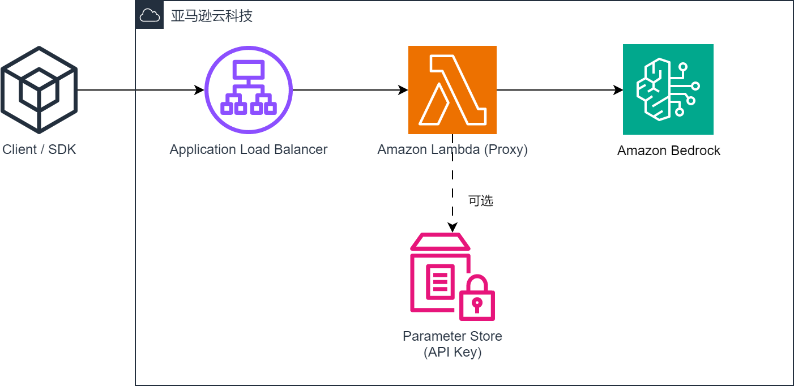

| :- | :- |
|---|---|
| 类型 | Guidance |
| 状态 | 正式发布 |
| 代码开源 | GitHub Repo |
该方案一键部署，基于无服务器架构。用户只需要在其AWS账号中部署该方案 (约3分钟)，然后修改环境变量，将针对GPT的调用发给Bedrock Access Gateway，就可以实现原应用中的模型到Claude家族系列模型的自动切换。该解决方案对用户的代码没有侵入性，便于用户快速体验Claude系列模型 (包括最新的Sonnet和Haiku)，加速业务迁移商机。

| :- | :- |
|---|---|
| 产品经理 | Wenmeng Gao |
| GTM经理 | Pu Zhang |